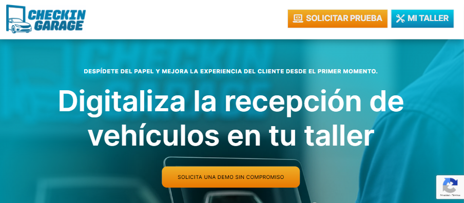

GitHub
GitHub
Aplicaciones de gestión
Vue 3, Laravel y MySQL. Componentes, formularios, permisos y funcionalidades para gestionar procesos empresariales.
María López Luengo · Desarrolladora web
Trabajo con Vue 3, Laravel, PHP, WordPress y PrestaShop en desarrollo, mantenimiento, migraciones y recuperación web.
01 / PERFIL
Me gusta entender cómo funcionan las cosas y encontrar soluciones cuando algo falla.
Soy desarrolladora web y trabajo en Ecomputer desde noviembre de 2025. Empecé desarrollando funcionalidades con Vue 3 para una aplicación de gestión basada en Laravel.
Después pasé a trabajar con PHP, WordPress y PrestaShop. También realizo migraciones, resuelvo incidencias y reviso o recupero instalaciones con problemas de seguridad.
02 / TRABAJO PROFESIONAL
Una visión general de las áreas en las que trabajo, sin exponer proyectos ni herramientas internas de clientes.
Vue 3, Laravel y MySQL. Componentes, formularios, permisos y funcionalidades para gestionar procesos empresariales.
WordPress, WooCommerce y PrestaShop. Personalización, mantenimiento, integraciones y resolución de incidencias.
Limpieza de instalaciones comprometidas, migraciones, revisión de permisos y recuperación de contenido.
03 / PROYECTO DESTACADO · CANTINRED STUDIO
Una aplicación SaaS para gestionar talleres, clientes, vehículos y reparaciones de principio a fin.
Arquitectura de datos, autenticación y permisos, formularios, subida de archivos y firma digital.
Laravel, PHP, MySQL, JavaScript y Blade.

04 / TECNOLOGÍAS
Distingo las herramientas que utilizo profesionalmente de las que he empleado en proyectos y formación.
Tecnologías que utilizo en desarrollo, mantenimiento y resolución de incidencias.
Herramientas con las que he construido proyectos propios o trabajado durante mi formación.
05 / TRAYECTORIA
Desarrollo web, atención en situaciones críticas, docencia y deporte: disciplinas distintas con un mismo hilo de adaptación y responsabilidad.
Experiencia profesional
Desarrollo y mantenimiento de funcionalidades en una aplicación interna de gestión de proyectos. Trabajo con componentes Vue, formularios, validaciones, filtros, permisos, gestión documental y comunicación con el backend Laravel.
Desarrollo y mantenimiento de páginas web y tiendas online. Personalización de temas, resolución de errores PHP, configuración de módulos, pasarelas de pago, migraciones y gestión de bases de datos.
Diagnóstico y limpieza de instalaciones WordPress comprometidas, revisión de archivos y permisos, comprobaciones con WP-CLI, recuperación de contenidos y preparación de migraciones entre servidores.
Experiencia profesional
Desarrollo full-stack de Check-In Garage. Definición de la arquitectura de datos para talleres, clientes y vehículos; creación del flujo de reparaciones y captura de datos; firma digital, validación en tiempo real y optimización de imágenes en formato WebP.
Formación destacada
Formación intensiva especializada en desarrollo web y 200 horas de prácticas profesionales. Las prácticas dieron paso a mi primera contratación como desarrolladora.
Experiencia profesional
Experiencia en Stadium Casablanca, Body Factory, Sinergim y E. M. Olivar, reforzando comunicación, adaptación y trabajo con personas.
Docencia de la Formación Profesional para el Empleo · Nivel 3
T&Z Formación System.
Grado Superior en Enseñanza y Animación Sociodeportiva
CPA Salduie · Grupo San Valero.
Operadora de Emergencias · Gobierno de Aragón (112)
Gestión de incidencias críticas en tiempo real y resolución de problemas bajo presión.
Monitora de natación
Federación Navarra de Natación.
IDIOMAS
Experiencia práctica mediante estancias de inmersión lingüística en Londres y Seattle (EE. UU.).
06 / CONTACTO
Estoy abierta a nuevas oportunidades y a proyectos en los que pueda aportar desarrollo, mantenimiento y resolución de problemas.